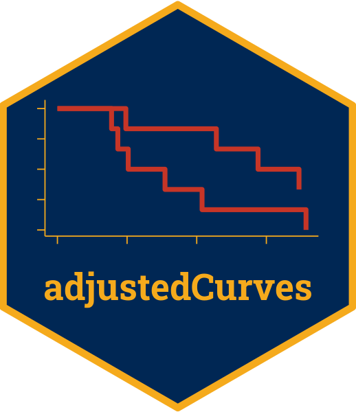

Inverse Probability of Treatment Weighting Combined with Inverse Probability of Censoring Weighting
surv_iptw_cens.RdThis page explains the details of estimating inverse probability of treatment and censoring weighted survival curves using the estimator by Cheng et al. (2022) for single event time-to-event data (method="iptw_cens" in the adjustedsurv function). All regular arguments of the adjustedsurv function can be used. Additionally, the treatment_model and censoring_model argument have to be specified in the adjustedsurv() call. Further arguments specific to this method are listed below.
Arguments
- treatment_model
[required] Must be either a model object with
variableas response variable, a vector of weights or a formula which can be passed toWeightIt.- weight_method
Method used in
WeightItfunction call. Ignored iftreatment_modelis not a formula object. Defaults to"ps".- stabilize
Whether to stabilize the weights or not. Is set to
FALSEby default. Stabilizing weights ensures that the sum of all weights is equal to the original sample size. It has no effect on point estimates, only on the asymptotic variance calculations and confidence intervals.- trim
Can be either
FALSE(default) or a numeric value at which to trim the weights. IfFALSE, weights are used as calculated or supplied. If a numeric value is supplied, all weights that are bigger thantrimare set totrimbefore the analysis is carried out. Useful when some weights are extremely large.- trim_quantiles
Alternative argument to trim weights based on quantiles. Can be either
FALSE(default) to use no trimming, or a numeric vector containing exactly two values between 0 and 1. These values specify the quantiles that the weights should be trimmed at. For example, ifc(0.01, 0.99)is supplied to this argument, all weights that are lower than the 0.01 quantile of the weight distribution will be set to that quantile and all weights that are higher than the 0.99 quantile of the weight distributions will be set to the 0.99 quantile.- censoring_model
[required] Must be a
formulaobject with nothing on the left-hand side and the covariates for which censoring should be adjusted for on the right-hand side. Internally, a Cox proportional hazards model is then fitted for each treatment group, in which the event indicator is reversed and the variables listed in the suppliedformulaare used as censoring predictors. For example,~ x1 + x2would mean that bothx1andx2are included as independent variables in the Cox models, and their influence on censoring is thus adjusted for through the Cox model (under the required assumptions).- coxph_control
A
listpassed to thecoxph.controlargument of thecoxphfunction when creating thecensoring_models.- ties
A single character string passed directly to the argument of the same name in the
coxphfunction when creating thecensoring_models.- ...
Further arguments passed to
weightit.
Details
Type of Adjustment: Requires a model describing the treatment assignment mechanism. This must be either a
glmormultinomobject. Also requires a model for the censoring mechanism, which is fit internally usingcoxph.Doubly-Robust: Estimates are not Doubly-Robust.
Categorical groups: Any number of levels in
variableare allowed. Must be a factor variable.Approximate Variance: Calculations to approximate the variance and confidence intervals are currently not available.
Allowed Time Values: Allows both continuous and integer time.
Bounded Estimates: Estimates are not guaranteed to be bounded in the 0 to 1 probability range.
Monotone Function: Estimates are guaranteed to be monotone.
Dependencies: This method requires the survival package. Additionally, the WeightIt package is required if
treatment_modelis a formula object.
This method works by modeling both the treatment assignment mechanism. Adjusted survival curves are calculated by first estimating appropriate case-weights for each observation in data. This can be done using inverse probability of treatment weights using the propensity score (usually estimated using a logistic regression model) or by some other method (see ?weightit). Those weights are then combined with time-dependent inverse probability of censoring weights as proposed by Cheng et al. (2022). If both types of weights are correctly estimated the resulting estimates will be unbiased. This method might be useful if adjustment for dependent censoring is needed, but users do not want to additionally supply an outcome model as required for method = "aiptw".
It is recommended to use stabilized weights by using stabilize=TRUE (the default value). More information can be found in the cited literature.
Value
Adds the following additional objects to the output of the adjustedsurv function:
weights: The final weights used in the analysis.n_at_risk: Adata.framecontaining the weighted number at risk and weighted number of events used in the calculations at each point in time for both groups. Note that these weighted numbers do not include the censoring weights. It is thus not possible to directly calculate the survival estimates from the weighted numbers alone.censoring_models: Alistcontaining one Cox model for each level in thegroupvariable, used to estimate the time-dependent censoring probabilities.
References
Chao Cheng, Fan Li, Laine E. Thomas and Fan (Frank) Li (2022). "Addressing Extreme Propensity Scores in Estimating Counterfactual Survival Functions via the Overlap Weights". In: American Journal of Epidemiology 191.6, pp. 1140-1151
Jun Xie and Chaofeng Liu (2005). "Adjusted Kaplan-Meier Estimator and Log- Rank Test with Inverse Probability of Treatment Weighting for Survival Data". In: Statistics in Medicine 24, pp. 3089-3110
Stanley Xu, Colleen Ross and Marsha A. Raebel, Susan Shetterly, Christopher Blanchette, and David Smith (2010). "Use of Stabilized Inverse Propensity Scores as Weights to Directly Estimate Relative Risk and Its Confidence Intervals". In: Value in Health 13.2, pp. 273-277
Examples
library(adjustedCurves)
library(survival)
set.seed(42)
# simulate some data as example
sim_dat <- sim_confounded_surv(n=50, max_t=1.2)
sim_dat$group <- as.factor(sim_dat$group)
# estimate a treatment assignment model
glm_mod <- glm(group ~ x1 + x3 + x5 + x6, data=sim_dat, family="binomial")
# use it to calculate adjusted survival curves with additional
# adjustment for dependent censoring
adjsurv <- adjustedsurv(data=sim_dat,
variable="group",
ev_time="time",
event="event",
method="iptw_cens",
treatment_model=glm_mod,
censoring_model= ~ x1 + x4)
# Alternatively, use custom weights
# In this example we use weights calculated using the propensity score,
# which is equal to using the glm model directly in the function
ps_score <- glm_mod$fitted.values
weights <- ifelse(sim_dat$group==1, 1/ps_score, 1/(1-ps_score))
adjsurv <- adjustedsurv(data=sim_dat,
variable="group",
ev_time="time",
event="event",
method="iptw_cens",
treatment_model=weights,
censoring_model= ~ x1 + x4)
if (requireNamespace("WeightIt")) {
# And a third alternative: use the WeightIt package
# here an example with equal results to the ones above:
adjsurv <- adjustedsurv(data=sim_dat,
variable="group",
ev_time="time",
event="event",
method="iptw_cens",
treatment_model=group ~ x1 + x3 + x5 + x6,
weight_method="ps",
censoring_model= ~ x1 + x4 + x5)
# here an example using Entropy Balancing Weighting:
adjsurv <- adjustedsurv(data=sim_dat,
variable="group",
ev_time="time",
event="event",
method="iptw_cens",
treatment_model=group ~ x1 + x3 + x5 + x6,
weight_method="ebal",
censoring_model= ~ x1 + x4 + x2)
}